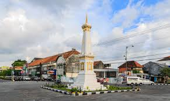
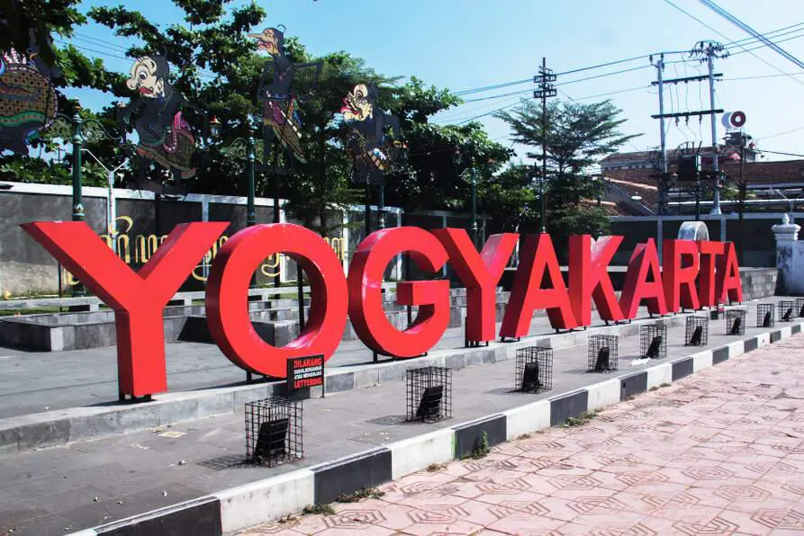

YOGYAKARTA |
|
|---|---|
| TUGAS 2 TUGAS 3 | |
|  | Latar belakang
Berdirinya Kota Yogyakarta berawal dari adanya Perjanjian Gianti pada Tanggal 13 Februari 1755 yang ditandatangani Kompeni Belanda di bawah tanda tangan Gubernur Nicholas Hartingh atas nama Gubernur Jendral Jacob Mossel. Isi Perjanjian Gianti : Negara Mataram dibagi dua : Setengah masih menjadi Hak Kerajaan Surakarta, setengah lagi menjadi Hak Pangeran Mangkubumi. Dalam perjanjian itu pula Pengeran Mangkubumi diakui menjadi Raja atas setengah daerah Pedalaman Kerajaan Jawa dengan Gelar Sultan Hamengku Buwono Senopati Ing Alega Abdul Rachman Sayidin Panatagama Khalifatullah.
Adapun daerah-daerah yang menjadi kekuasaannya adalah Mataram (Yogyakarta), Pojong, Sukowati, Bagelen, Kedu, Bumigede dan ditambah daerah mancanegara yaitu; Madiun, Magetan, Cirebon, Separuh Pacitan, Kartosuro, Kalangbret, Tulungagung, Mojokerto, Bojonegoro, Ngawen, Sela, Kuwu, Wonosari, Grobogan. Setelah selesai Perjanjian Pembagian Daerah itu, Pengeran Mangkubumi yang bergelar Sultan Hamengku Buwono I segera menetapkan bahwa Daerah Mataram yang ada di dalam kekuasaannya itu diberi nama Ngayogyakarta Hadiningrat dan beribukota di Ngayogyakarta (Yogyakarta). Ketetapan ini diumumkan pada tanggal 13 Maret 1755. Tempat yang dipilih menjadi ibukota dan pusat pemerintahan ini ialah Hutan yang disebut Beringin, dimana telah ada sebuah desa kecil bernama Pachetokan, sedang disana terdapat suatu pesanggrahan dinamai Garjitowati, yang dibuat oleh Susuhunan Paku Buwono II dulu dan namanya kemudian diubah menjadi Ayodya. Setelah penetapan tersebut diatas diumumkan, Sultan Hamengku Buwono segera memerintahkan kepada rakyat membabad hutan tadi untuk didirikan Kraton. Sebelum Kraton itu jadi, Sultan Hamengku Buwono I berkenan menempati pasanggrahan Ambarketawang daerah Gamping, yang tengah dikerjakan juga. Menempatinya pesanggrahan tersebut resminya pada tanggal 9 Oktober 1755. Dari tempat inilah beliau selalu mengawasi dan mengatur pembangunan kraton yang sedang dikerjakan. Setahun kemudian Sultan Hamengku Buwono I berkenan memasuki Istana Baru sebagai peresmiannya. Dengan demikian berdirilah Kota Yogyakarta atau dengan nama utuhnya ialah Negari Ngayogyakarta Hadiningrat. Pesanggrahan Ambarketawang ditinggalkan oleh Sultan Hamengku Buwono untuk berpindah menetap di Kraton yang baru. Peresmian mana terjadi Tanggal 7 Oktober 1756. Kota Yogyakarta dibangun pada tahun 1755, bersamaan dengan dibangunnya Kerajaan Ngayogyakarta Hadiningrat oleh Sri Sultan Hamengku Buwono I di Hutan Beringin, suatu kawasan diantara sungai Winongo dan sungai Code dimana lokasi tersebut nampak strategi menurut segi pertahanan keamanan pada waktu itu Sesudah Proklamasi Kemerdekaan 17 Agustus 1945, Sri Sultan Hamengku Buwono IX dan Sri Paduka Paku Alam VIII menerima piagam pengangkatan menjadi Gubernur dan Wakil Gubernur Propinsi DIY dari Presiden RI, selanjutnya pada tanggal 5 September 1945 beliau mengeluarkan amanat yang menyatakan bahwa daerah Kesultanan dan daerah Pakualaman merupakan Daerah Istimewa yang menjadi bagian dari Republik Indonesia menurut pasal 18 UUD 1945. Dan pada tanggal 30 Oktober 1945, beliau mengeluarkan amanat kedua yang menyatakan bahwa pelaksanaan Pemerintahan di Daerah Istimewa Yogyakarta akan dilakukan oleh Sri Sultan Hamengkubuwono IX dan Sri Paduka Paku Alam VIII bersama-sama Badan Pekerja Komite Nasional. Meskipun Kota Yogyakarta baik yang menjadi bagian dari Kesultanan maupun yang menjadi bagian dari Pakualaman telah dapat membentuk suatu DPR Kota dan Dewan Pemerintahan Kota yang dipimpin oleh kedua Bupati Kota Kasultanan dan Pakualaman, tetapi Kota Yogyakarta belum menjadi Kota Praja atau Kota Otonom, sebab kekuasaan otonomi yang meliputi berbagai bidang pemerintahan massih tetap berada di tangan Pemerintah Daerah Istimewa Yogyakarta. |
| ©2024 YARLIN> | |